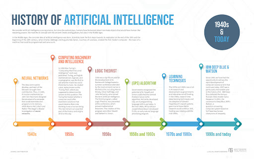

Introduction

Artificial Intelligence (AI) refers to the simulation of human intelligence in machines that are programmed to think and act like humans. It encompasses machine learning, deep learning, natural language processing, and more.
History of AI
The history of AI dates back to ancient myths and legends. In modern times, its development began in the 1950s with pioneers like Alan Turing. Milestones include the creation of the first AI programs, neural networks, and recent advances in deep learning.
Applications of AI

AI is applied in various fields such as healthcare, finance, autonomous vehicles, virtual assistants, and more. Its ability to process vast amounts of data and make predictions is transforming industries worldwide.